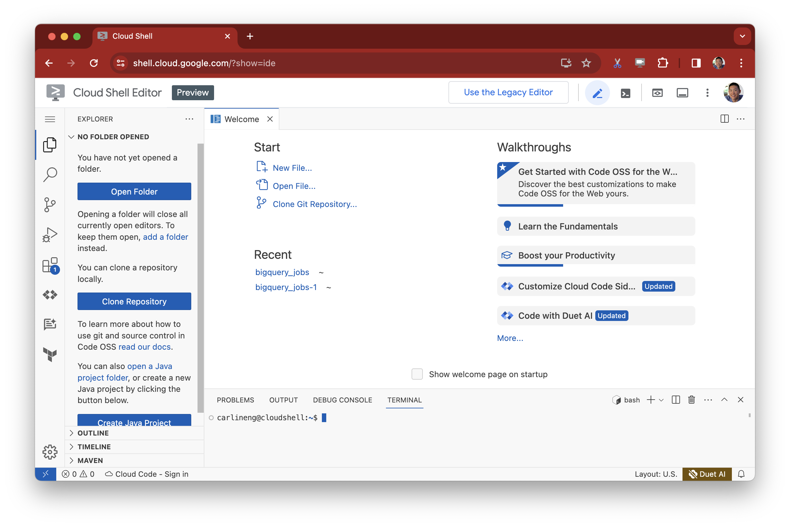

All Posts
All Posts
January 28, 2024 by Carlin Eng
Malloy is an innovative way to analyze and explore data. The Malloy team’s dedication to user experience removes much of the toil of data analysis, and turns it into a joyful experience. With some recent advances on GCP, it’s now easier than ever to run Malloy against your data in BigQuery. This blog post will show you exactly how, and provide you with some sample analysis that you can take off the shelf and use to explore your BigQuery usage patterns.
Google Cloud Shell is a browser-based environment that greatly simplifies developing and operating a GCP environment. It comes preloaded with all the necessary libraries and credentials for accessing resources in a GCP project, including BigQuery. It also comes with a VS Code-based editing environment called Cloud Code, with full access to the VS Code Extension Marketplace. Navigate to ide.cloud.google.com and you’ll see it open up. Make sure you are running the ‘Preview’ as it has a more recent version of VS Code.
To start analyzing your BigQuery usage data with Malloy, you need to do a few things:
Install the Malloy VS Code extension
Connect Cloud Code to your GCP Project
Clone the bigquery_jobs Github repository . Let's walk through it, step-by-step:
Installing the Extension
In your Cloud Shell Editor, the VS Code extension is accessible through the Extension Marketplace. Click on the Extensions icon in the sidebar, search for “Malloy”, and install the extension.
Signing into your GCP Project
Click the “Cloud Code - Sign In” button on the bottom of your screen. This will open an authorization dialog that prompts you to authorize Cloud Shell to your GCP Project.
The Status Bar at the bottom of your screen should now have the name of your GCP project. If you instead see text that says “Cloud Code - No Project”, click the “No Project” text on the status bar, and it will open up another dialog box that prompts you to select a project:
Once you’ve selected a Google Cloud project, your Cloud Code environment is authorized to run queries against BigQuery.
Load the BigQuery Jobs Data Model from Github
We’ve pre-built a Malloy data model on top of the BigQuery information_schema views. This will allow you to gather insights about your BigQuery usage without having to do the detective work of understanding the schema of the tables yourself. Just clone the data model, point the tables to your own internal data, and run the notebooks.
Click on the “Clone Git Repository” button on the home screen and enter the URL for our git repository: https://github.com/malloydata/bigquery_jobs.git
This will clone the git repo into the filesystem of your Cloud Shell instance, and open up the repo as a folder in your VS Code environment.
Point the Data Models at your own Data
Open up config.malloy in the repo and in each of the bigquery.sql(‘...’) statements, enter the values for your own information_schema views. For example, if my GCP Project was in the “US” region, the config file would look like the following:
source: jobs_tbl is bigquery.sql('SELECT * FROM `region-US`.INFORMATION_SCHEMA.JOBS') source: tables_tbl is bigquery.sql('SELECT * FROM `region-US`.INFORMATION_SCHEMA.TABLES') source: table_storage_tbl is bigquery.sql('SELECT * FROM `region-US`.INFORMATION_SCHEMA.TABLE_STORAGE')
Try clicking the "Preview" CodeLens action to show some examples of the data in the information-schema.
If you run into an error saying "bytes billed exceeded", you'll need to update the BigQuery connection settings.
Run the Dashboard Queries
Once your model has been configured to point at your own information_schema data, you can immediately start exploring. The dashboard.malloynb file contains a set of queries that will immediately give you an overview of your high level BigQuery usage patterns, including slot usage over time, hot and cold tables, most active users, and most expensive queries. Open up the dashboard.malloynb file and click the “Run All” button at the top to execute each of the queries, then scroll through the notebook to see the results:
Conclusion
Data analysis is an iterative process, and the answer to one question will spawn many more questions. Within a Malloy Notebook, it’s easy to use one query as a starting point for an investigation, and branch off into many different directions. Within this notebook, I can easily add new Malloy query cells to drill in further. As a quick exercise to see the power of Malloy for yourself, try answering a few of these simple questions:
Runaway queries in BigQuery can cause resource contention. Oftentimes these queries bump up against the default 6 hour runtime limit. Are there any recurring queries in your project that are hitting this limit and causing problems? Write a query to identify these queries, and the user responsible for issuing them.
BigQuery has the ability to instantaneously scale your compute resources up and down to meet demand. Does your BigQuery project exhibit any clear usage patterns around time of day or day of week?
The model we built in the
jobs.malloyfile is fairly basic. It includes some scalar transformations, some aggregating measures, and some queries of interest. What other calculations would you include in the model to make it interesting for your own data?
We love hearing feedback and suggestions, so once you've tried this out, let us know how your experience went -- join the Malloy community Slack channel and drop us a line!